노후 산단 탈바꿈… 청년 디자인 입혔다
한국디자인진흥원의 문화선도산단 리빙랩 결과모음집 발간 소식. 구미·완주·창원 산단에서 38개 과제가 나왔고, 완주산단은 12개 과제를 발굴했습니다.
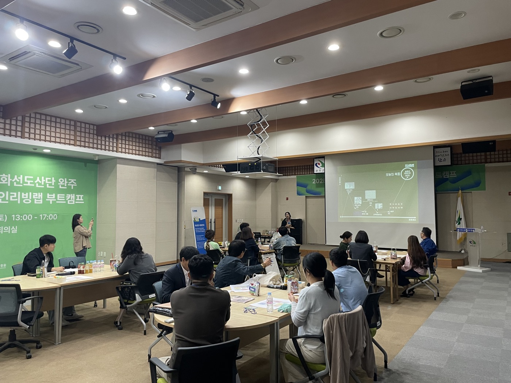
SERVICE DESIGN · LIVING LAB · 2025
Overview
완주산단에서 일하고 생활하는 근로자와 청년의 생활, 문화, 근무환경을 리빙랩 방식으로 들여다봤습니다. 설문, 인터뷰, 워크숍으로 현장의 문제를 함께 찾고, 실행할 수 있는 아이디어로 정리했습니다.
입주기업 756개 기준
근로자 27,456명 기준
설문·현장 조사
안전 · 안정 · 유지
공간 · 서비스 · 콘텐츠 · 인프라
커뮤니티 모델 + 지역 상생 모델
거버넌스 체계 + 지속가능 모델
근로 환경에 따라 삶의 질과 처우 격차가 커서 단일 정책으로는 대응하기 어렵습니다. 그래서 단계별 추진 방향을 세웠습니다.
Process
설문, 인터뷰, 워크숍에서 모은 사용자 경험으로 산단의 핵심 문제와 니즈를 정의하고, 이해관계자와 함께 아이디어를 검증했습니다.
산단 현황 공유
사용자 니즈 도출
페르소나 정의
고객여정지도 작성
도출 아이디어 공유
의견 수렴 및 보완
실행가능성 확보
이해관계자 참여
우선순위 아이디어
카노모델 검증
최종 아이디어 종합
보완점 논의
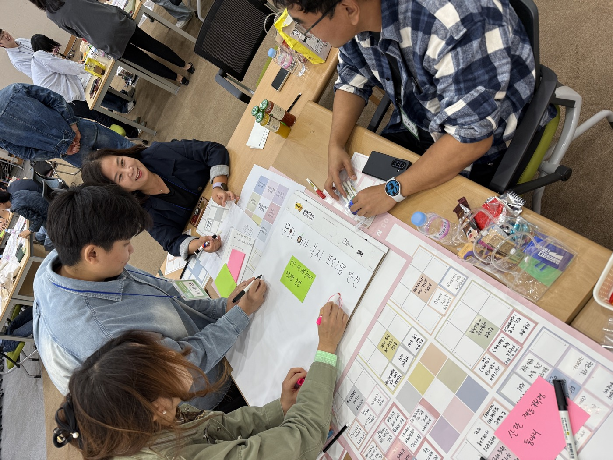
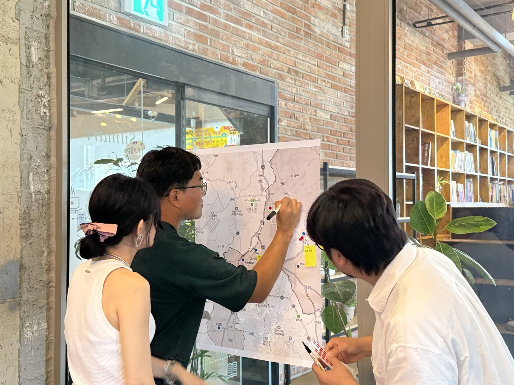
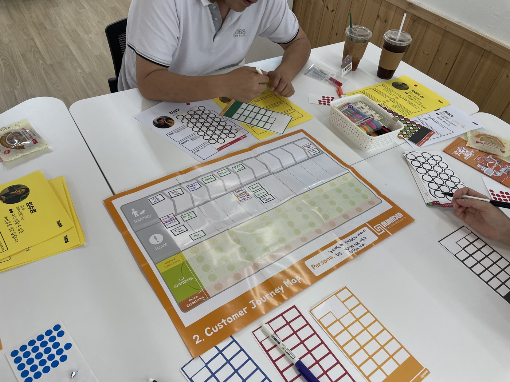
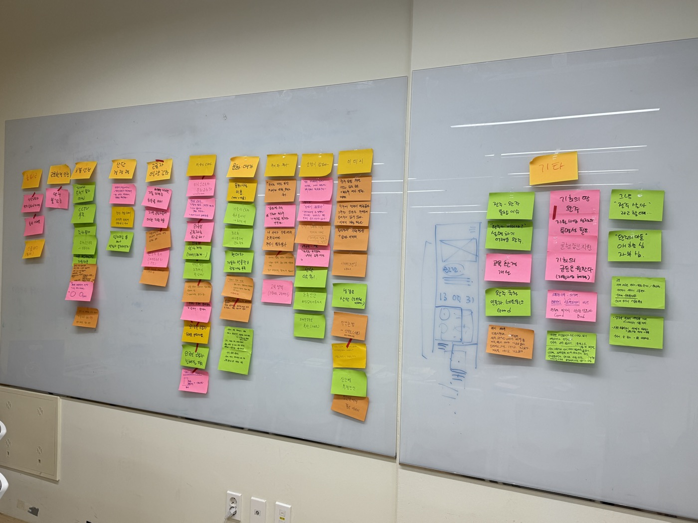
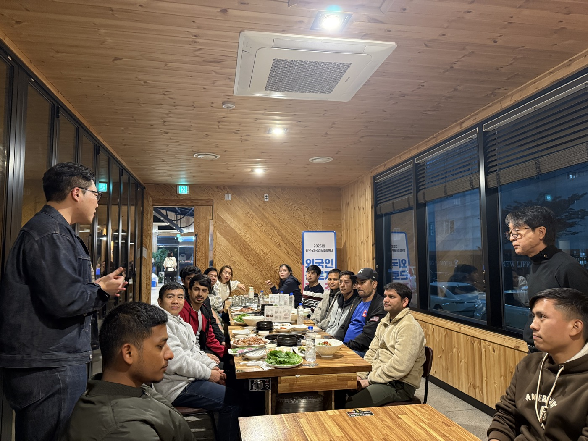
Research & Insights
니즈와 문제 분석으로 산단의 현황을 유형별로 나누고, 유형마다 대표 사용자와 핵심 문제를 정의했습니다.
전북에서 유일하게 인구가 증가하는 도시입니다. 주거와 산단이 가까워 생기는 악취, 노후 시설, 부족한 교통 인프라로 세대 이탈이 우려됩니다.
→ 산단마실 · 인더-스테이 · 완주맛실
756개 기업 중 91.2%가 100인 미만입니다. 절반 이상이 구내식당이 없고, 외국인 근로자의 기숙사 환경도 열악합니다.
→ 하모니클럽하우스 · 글로컬 페스타 · 완주 ON
입주 초기 근로자와 가족이 지역 정보를 얻기 어렵고, 여가 공간과 프로그램 접근성도 낮습니다. 문화복지시설 미사용률은 79.9%입니다.
→ 산단포켓 · 의문당 · 워크앤조이
세계 최대 규모의 수소 모빌리티 산업단지입니다. 산업 브랜드 기반 서비스를 지역 생활문화권에 먼저 적용하고, AI 교통문화를 선도할 기회가 있습니다.
→ 완주루프 · 셀프케어 가라지 · 안전로드 프로젝트
Ideas
워크숍 결과를 반영해 실행할 수 있고 우선순위가 높은 개선 아이디어 12개를 도출했습니다.
찾아가는 장날. 근로자 간 교류를 위한 이동형 플리마켓
출장자와 단기 근로자를 위한 주민운영형 게스트하우스 라운지
HACCP 기반 공용키친과 로컬푸드 도시락 구독
외국인 근로자를 위한 운동·문화교류 공간
국가별 문화행사와 공용키친 프로그램
이주 근로자의 의료·행정·생활 정착 지원 통합
산업단지 생활문화 정보를 한곳에 모은 가이드 플랫폼
청년과 은퇴자를 잇는 세대연계형 커리어 멘토링
기술을 나누는 재능기부형 직무·취미 동아리
출퇴근 혼잡을 줄이고 문화거점을 잇는 수소 셔틀버스
자차 근로자를 위한 공동 셀프 정비 센터
불법주정차와 보행 안전 문제를 푸는 교통 인프라 개선
Concept
우선순위 아이디어를 실제 산단 풍경 위에 시각화해 이해관계자와 함께 검토했습니다.
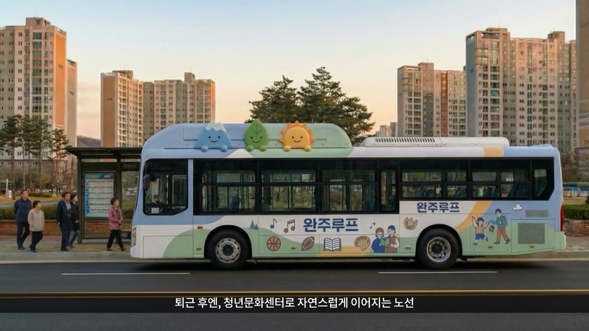
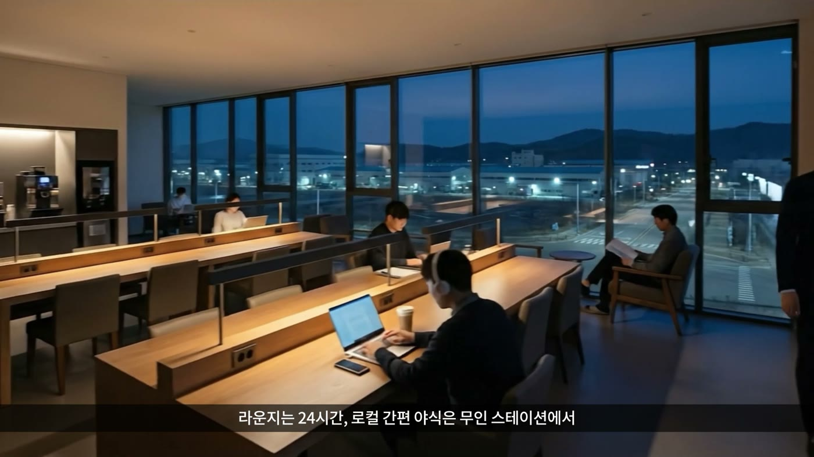
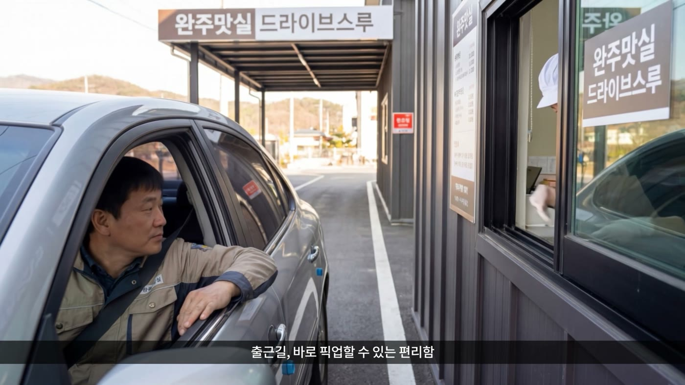
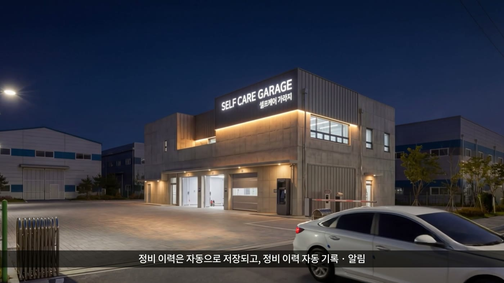
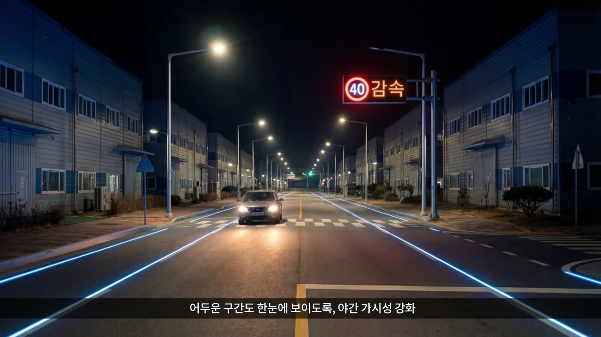
Press
한국디자인진흥원의 문화선도산단 리빙랩 결과모음집 발간 소식. 구미·완주·창원 산단에서 38개 과제가 나왔고, 완주산단은 12개 과제를 발굴했습니다.
청년, 주민, 공무원, 디자이너가 함께 문제를 찾고 현장에서 가설을 검증하는 참여형 정책 실험으로서의 리빙랩을 소개합니다.
전문 읽기